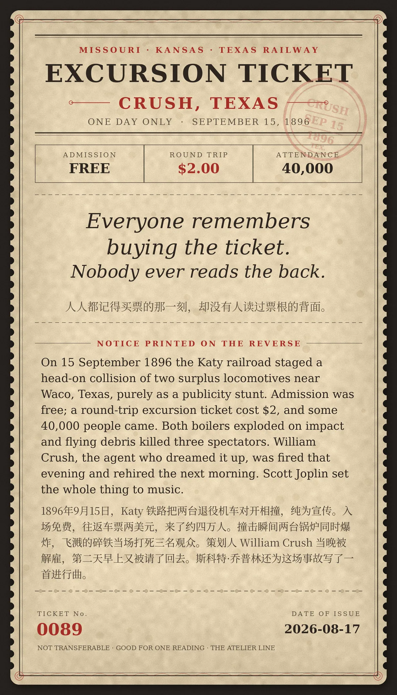

Everyone remembers buying the ticket. Nobody ever reads the back.（人人都记得买票的那一刻，却没有人读过票根的背面。）
1896年9月15日，美国 Katy 铁路（Missouri–Kansas–Texas）在得州韦科以北把两台退役机车对开相撞，纯为宣传。入场免费，往返车票两美元，来了约四万人。撞击瞬间两台锅炉同时爆炸，飞溅的碎铁当场打死三名观众。策划人 William Crush 当晚被解雇，第二天早上又被请了回去。斯科特·乔普林随后为这场事故写了一首《Great Crush Collision March》。
冷知识由执笔的模型自行查证。逐条断言、来源与所引原句存档在纯文字副本里，未经程序逐字校验，留作事后核实。